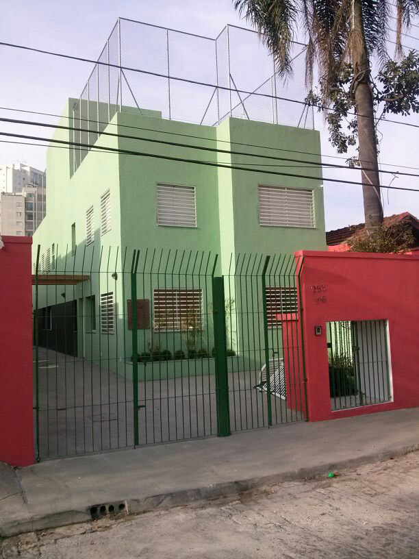

Novidades
De uma casa térrea, ganhamos uma de 3 andares. Esse nosso sonho só foi possível porque outras pessoas também sonharam. " Sonho em rede" Agradecemos a Leroy Merlin a idealizadora, e a todos os seus parceiros que juntamente acreditaram. Em nome de todas as crianças e adolescentes, funcionários, voluntários e diretoria, o nosso MUITO OBRIGADO!
AJUDE UMA ONG COM O VALOR DE SEU CELULAR